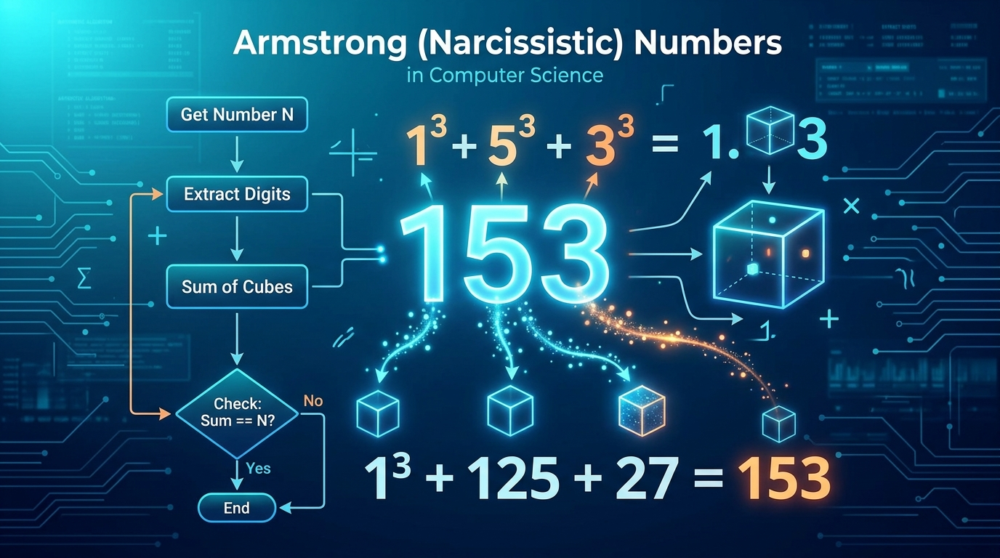
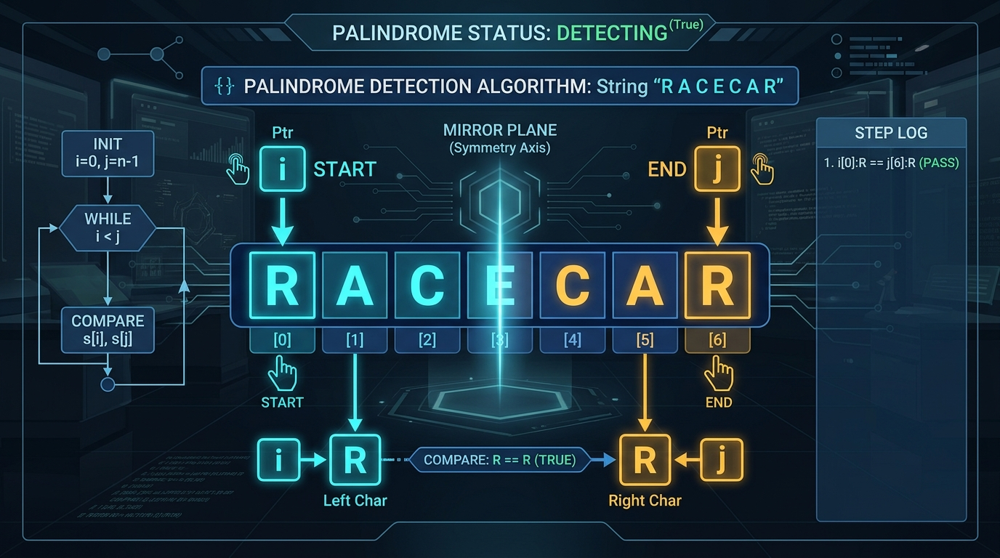

Série N°5 : Les Fonctions
Exercice 1 : QCM Fondamentaux des Fonctions
🟢 Facile- Une fonction est un sous-programme qui calcule et retourne un résultat unique de type simple (Entier, Réel, Booléen, Caractère ou Chaîne).
- En algorithme, l'en-tête s'écrit :
Fonction NomFonc(param1 : type1, param2 : type2) : TypeRetouret le résultat est transmis par l'instructionRetourner valeur. - En Python, une fonction se définit avec
def NomFonc(param1, param2):et se termine parreturn valeur. - L'appel d'une fonction ne s'utilise jamais seul comme instruction, mais au sein d'une expression, d'une affectation ou d'une condition.
Cochez la bonne réponse pour chacune des 10 questions suivantes :
Question 1
En algorithmique, une fonction est un sous-programme qui :
- Calcule et retourne un résultat unique de type simple à travers son identificateur
- Affiche obligatoirement un message à l'écran via l'instruction Ecrire
- Modifie directement tous ses paramètres d'appel en mémoire
- Ne peut recevoir aucun paramètre d'entrée
Question 2
Quelle est la syntaxe correcte de l'en-tête d'une fonction calculant le cube d'un entier ?
- Algorithme Cube(x : Entier) : Entier
- Fonction Cube(x : Entier) : Entier
- Fonction Cube(x : Entier)
- Début Cube(x : Entier) : Entier
Question 3
Quelle instruction algorithmique permet de renvoyer le résultat calculé par une fonction au programme appelant ?
- Ecrire(res)
- Lire(res)
- Retourner res
- Resultat ← res
Question 4
En Python, quelle instruction traduit fidèlement le mot-clé algorithmique Retourner ?
- return
- print()
- output()
- yield()
Question 5
Dans l'instruction d'appel res ← Surface(larg + 2, 10), l'expression larg + 2 représente :
- Un paramètre formel
- Un paramètre effectif (argument réel d'appel)
- Une variable globale obligatoire
- Un identificateur de fonction
Question 6
La concordance entre paramètres formels et paramètres effectifs exige le respect strict :
- Du nombre de paramètres uniquement
- Du nom identique des variables
- Du nombre, de l'ordre et des types des paramètres
- De l'ordre alphabétique des identificateurs
Question 7
Comment doit être utilisé l'appel d'une fonction dans un programme ?
- Comme une instruction isolée indépendante (exemple :
Calcul(x) ;) - Au sein d'une expression, d'une affectation ou d'un test (exemple :
y ← Calcul(x)) - Uniquement dans la déclaration des variables
- Uniquement à l'intérieur d'une boucle Pour
Question 8
Les objets déclarés dans le T.D.O.L. (Tableau de Déclaration des Objets Locaux) d'une fonction :
- Sont accessibles et modifiables partout dans le programme principal
- Ont une portée locale : ils naissent lors de l'appel et sont détruits dès la fin de la fonction
- Doivent obligatoirement porter des noms différents des lettres de l'alphabet
- Sont partagés avec toutes les autres fonctions du programme
Question 9
Parmi les types suivants, lequel d'entre eux peut être retourné par une fonction ?
- Entier ou Réel
- Booléen
- Chaîne de caractères
- Tous les types simples (Entier, Réel, Booléen, Caractère, Chaîne)
Question 10
En Python, que renvoie une fonction qui ne contient aucune instruction return ?
- La valeur spéciale
None - L'entier
0 - Une erreur de syntaxe à la compilation
- La valeur du premier paramètre passé
Exercice 2 : QCM Analyse, Traçage & Portée
🟠 IntermédiaireAnalysez les algorithmes et scripts ci-dessous puis cochez la réponse exacte :
Question 1
Soit la fonction algorithmique suivante :
Fonction Mystere(n : Entier) : Entier
Début
s ← 0
Pour i de 1 à n Faire
s ← s + i
Fin Pour
Retourner s
FinQuelle est la valeur retournée par l'appel Mystere(4) ?
- 4
- 10 (car 1 + 2 + 3 + 4 = 10)
- 24 (produit factoriel)
- 16
Question 2
Considérons la fonction suivante :
Fonction Est_Pair(n : Entier) : Booléen
Début
Retourner (n Mod 2 = 0)
FinQuelle est la valeur exacte renvoyée par l'expression Non Est_Pair(15) ?
- Vrai (True en Python)
- Faux (False en Python)
- 1
- 0
Question 3
Soit l'en-tête : Fonction Extraire(ch : Chaîne, p : Entier, n : Entier) : Chaîne.
Quel appel dans le programme principal est invalide ?
mot ← Extraire("Bac2026", 1, 3)mot ← Extraire(1, "Bac2026", 3)Ecrire(Extraire("Informatique", 3, 4))Si Extraire(ch, 1, 1) = "A" Alors ...
Question 4
Soit le script Python suivant :
def afficher_double(x):
print(x * 2)
res = afficher_double(5) + 3Que produit l'exécution de ce script ?
- Une erreur
TypeErrorcarafficher_double(5)renvoieNoneet on ne peut additionnerNone + 3 resprend la valeur 13resprend la valeur 10resprend la valeur 8
Question 5
Soit le script Python suivant portant sur la portée des identificateurs :
x = 10
def modifier(x):
x = 25
return x * 2
y = modifier(x)Quelles sont les valeurs respectives de x et y à la fin du script ?
- x = 25 et y = 50
- x = 10 et y = 20
- x = 10 et y = 50 (le x local dans modifier ne modifie pas le x global)
- x = 50 et y = 50
Question 6
Dans une fonction, la variable utilisée pour stocker le résultat intermédiaire et la variable de contrôle d'une boucle Pour doivent être déclarées :
- Dans le T.D.O.G. (Tableau de Déclaration des Objets Globaux)
- Dans le T.D.O.L. (Tableau de Déclaration des Objets Locaux) de la fonction
- Dans la liste des paramètres formels de l'en-tête
- Nulle part, elles sont automatiquement devinées par l'interpréteur
Question 7
Soit la fonction algorithmique suivante :
Fonction Premier_Chiffre(ch : Chaîne) : Caractère
Début
i ← 0
Tant que (i < Long(ch)) Et Non (ch[i] ∈ {"0".."9"}) Faire
i ← i + 1
Fin Tant que
Si i < Long(ch) Alors
Retourner ch[i]
Sinon
Retourner "@"
Fin Si
FinQue renvoie l'appel Premier_Chiffre("Bac2026") ?
- "2"
- "B"
- "6"
- "@"
Question 8
En Python 3, quelle formulation traduit le plus élégamment une fonction vérifiant si un entier n est strictement compris entre 2 et 100 ?
def valide(n): return n > 2 and n < 100def valide(n): return 2 < n < 100- Les deux propositions 1 et 2 sont valides et équivalentes en Python
def valide(n): if 2 < n < 100: return True(sans clause else)
Question 9
Que se passe-t-il si l'on écrit res = Carre(x, y) alors que la fonction a été définie avec def Carre(x): return x * x ?
- Python ignore simplement le deuxième argument
y - Une erreur
TypeError: Carre() takes 1 positional argument but 2 were givenest levée - Python multiplie
xpary - Le programme boucle indéfiniment
Question 10
Pourquoi est-il préférable qu'une fonction retourne son résultat avec Retourner (ou return) plutôt que de l'afficher directement avec Ecrire() (ou print()) ?
- Parce que la fonction est réutilisable : son résultat peut être stocké, testé dans un
Siou réutilisé dans une expression - Parce que l'instruction d'affichage est strictement interdite dans un sous-programme
- Parce qu'un affichage direct consomme obligatoirement dix fois plus de mémoire
- Parce qu'une fonction qui affiche directement provoque une erreur de syntaxe à l'exécution
Exercice 3 : Nombres d'Armstrong (Est_Armstrong)
🟢 Facile
Un entier naturel N ($N \ge 1$) est appelé nombre d'Armstrong (ou nombre narcissique) si la somme de ses chiffres élevés chacun à la puissance p (où p est le nombre total de chiffres de N) est égale à N lui-même.
Exemples pour des entiers à 3 chiffres ($p = 3$) :
- 153 est un nombre d'Armstrong car $1^3 + 5^3 + 3^3 = 1 + 125 + 27 = 153$.
- 370 est un nombre d'Armstrong car $3^3 + 7^3 + 0^3 = 27 + 343 + 0 = 370$.
- 371 est un nombre d'Armstrong car $3^3 + 7^3 + 1^3 = 27 + 343 + 1 = 371$.
- 407 est un nombre d'Armstrong car $4^3 + 0^3 + 7^3 = 64 + 0 + 343 = 407$.
- 125 n'est pas un nombre d'Armstrong car $1^3 + 2^3 + 5^3 = 1 + 8 + 125 = 134 \ne 125$.

Travail demandé :
- Définir la spécification de la fonction
Est_Armstrong(paramètres, type de retour et rôle). - Dresser le Tableau de Déclaration des Objets Locaux (T.D.O.L.).
- Rédiger l'algorithme officiel de la fonction en décomposant
Nà l'aide des opérateursDivetMod 10. - Traduire la fonction en Python 3 et proposer un exemple d'appel.
- Pour déterminer le nombre total de chiffres
p, compter combien de divisions entières par 10 (temp Div 10) sont nécessaires pour réduiretempà 0. - Pour extraire successivement chaque chiffre, utiliser le reste modulo 10 (
temp Mod 10). - Calculer l'élévation à la puissance
chiffre ^ p(en Python :chiffre ** p) et cumuler dans une variablesomme. - La fonction retourne directement le résultat du test d'égalité
somme = n.
Est_Armstrong(153) → Vrai | Est_Armstrong(370) → Vrai | Est_Armstrong(125) → Faux
Simulateur Interactif : Nombres d'Armstrong
Exercice 4 : Détection de Palindrome (Est_Palindrome)
🟢 Facile
Un palindrome est un mot qui reste identique qu'on le lise de gauche à droite ou de droite à gauche.
Exemples : "RADAR", "KAYAK", "LAVAL", "ETE", "12321" sont des palindromes.
On souhaite écrire une fonction Est_Palindrome(ch : Chaîne) : Booléen qui vérifie si la chaîne ch est un palindrome en comparant les caractères symétriques depuis les deux extrémités avec arrêt dès la première différence.
i (début) et j (fin) convergent vers le centre sans avoir besoin d'inverser toute la chaîne en mémoire.

Travail demandé :
- Pourquoi une boucle avec arrêt conditionnel (sans
break) est-elle plus efficace que d'inverser toute la chaîne ? - Dresser le Tableau de Déclaration des Objets Locaux (T.D.O.L.).
- Rédiger l'algorithme officiel de la fonction en utilisant deux indices convergents
ietj. - Traduire la fonction en Python 3 (insensible à la casse avec
upper()).
- Initialiser deux indices :
i ← 0(début) etj ← Long(ch) - 1(fin). - Répéter la comparaison tant que
i < jet que les caractères symétriques coïncident :Majus(ch[i]) = Majus(ch[j]). - À chaque étape, avancer
i ← i + 1et reculerj ← j - 1. - À la sortie de la boucle, le mot est un palindrome si et seulement si les deux indices se sont croisés (
i ≥ j).
Est_Palindrome("RADAR") → Vrai | Est_Palindrome("KAYAK") → Vrai | Est_Palindrome("Informatique") → Faux
Simulateur Interactif : Deux Indices Convergents
| Étape | ch[i] (gauche) | ch[j] (droite) | ch[i] = ch[j] ? | Action algorithmique |
|---|---|---|---|---|
| {{ st.stepNum }} | ch[{{ st.i }}] = '{{ st.charI }}' |
ch[{{ st.j }}] = '{{ st.charJ }}' |
Vrai Faux | {{ st.explanation }} |
Exercice 5 : Mots Ordonnés Alphabétiquement (Est_Ordonnee)
🟠 Intermédiaire
En linguistique informatique, un mot est dit ordonné (ou abécédaire) si ses lettres apparaissent dans l'ordre alphabétique croissant, de gauche à droite ($ch[0] \le ch[1] \le ch[2] \le \dots \le ch[Long(ch)-1]$).
La vérification doit être insensible à la casse (majuscules et minuscules traitées à l'identique). Une chaîne vide ou composée d'une seule lettre est considérée comme ordonnée.
Exemples :
"EFFORT"est ordonné carE ≤ F ≤ F ≤ O ≤ R ≤ T."CHINTZ"est ordonné carC ≤ H ≤ I ≤ N ≤ T ≤ Z."almost"est ordonné cara ≤ l ≤ m ≤ o ≤ s ≤ t."BOUQUET"n'est pas ordonné carU > Q(la lettre 'U' apparaît avant 'Q')."PYTHON"n'est pas ordonné carY > T.
Travail demandé :
- Préciser l'en-tête de la fonction
Est_Ordonnee(ch : Chaîne) : Booléen(paramètres, type de retour et spécification). - Dresser le Tableau de Déclaration des Objets Locaux (T.D.O.L.).
- Rédiger l'algorithme officiel à l'aide d'une boucle
Tant quegarantissant l'arrêt anticipé dès la première rupture d'ordre ($Majus(ch[i]) > Majus(ch[i+1])$) sans utiliserbreak. - Traduire la fonction en Python 3 et proposer des exemples d'appels.
- Initialiser une variable booléenne (ex :
ordonne ← Vrai) et un indice de parcoursi ← 0. - Parcourir la chaîne tant que
(i < Long(ch) - 1) Et (ordonne = Vrai). - À chaque itération, comparer deux lettres consécutives converties en majuscules : si
Majus(ch[i]) > Majus(ch[i + 1]), positionnerordonne ← Fauxpour stopper immédiatement la boucle sans recourir à unbreak. - Avancer l'indice
i ← i + 1à chaque étape. À la sortie de la boucle, la fonction retourne la valeur finale deordonne.
Est_Ordonnee("EFFORT") → Vrai | Est_Ordonnee("almost") → Vrai | Est_Ordonnee("BOUQUET") → Faux
Simulateur Interactif : Ordre Alphabétique Croissant
| Indice i | Comparaison adjacente | Ordre respecté ? | Statut boucle |
|---|---|---|---|
| {{ st.index }} | ch[{{ st.index }}] = '{{ st.c1 }}' ≤ ch[{{ st.index + 1 }}] = '{{ st.c2 }}' |
Oui ('{{ st.c1 }}' ≤ '{{ st.c2 }}') Non ('{{ st.c1 }}' > '{{ st.c2 }}') | {{ st.explanation }} |
Exercice 6 : Cryptographie — Chiffrement de César (Chiffrer_Cesar)
🔴 Avancé
Le chiffrement de César est l'une des techniques historiques fondamentales de cryptographie. Il consiste à décaler chaque lettre d'un message d'un nombre fixe cle de positions dans l'alphabet ($1 \le cle \le 25$).
Si le décalage dépasse la lettre Z, on repart circulairement depuis le début de l'alphabet (modulo 26). Les caractères non alphabétiques (espaces, chiffres, ponctuation) sont recopiés sans modification.
Exemple avec $cle = 3$ :
Le message "BAC 2026 : SECRET Z" devient "EDF 2026 : VHFUHW C" (B→E, A→D, C→F, Z→C).
nouveau_rang = (rang + cle) mod 26 sur l'anneau des 26 lettres de l'alphabet.
Travail demandé :
- Écrire la formule mathématique du décalage d'un caractère majuscule
carà l'aide des fonctions standardsOrdetChr. - Dresser le Tableau de Déclaration des Objets Locaux (T.D.O.L.).
- Rédiger l'algorithme officiel de la fonction
Chiffrer_Cesar(msg : Chaîne, cle : Entier) : Chaîne. - Traduire la fonction en Python 3 et proposer un exemple complet de chiffrement/déchiffrement.
- Pour une lettre majuscule, déterminer sa position relative dans l'alphabet (de 0 à 25) :
rang ← Ord(car) - Ord("A"). - Appliquer le décalage circulaire avec le modulo :
nouveau_rang ← (rang + cle) Mod 26. - Retrouver le nouveau caractère via
Chr(Ord("A") + nouveau_rang). - Appliquer la même logique aux minuscules avec
Ord("a"). Recopier les caractères non alphabétiques sans changement.
Chiffrer_Cesar("BAC 2026", 3) → "EDF 2026" | Chiffrer_Cesar("SECRET Z", 1) → "TFDSFU A"
Simulateur Interactif : Chiffrement de César
cle_inverse = 26 - {{ cleanKey }} = {{ cipherAnalysis.reverseKey }}.
| Indice (i) | {{ idx }} |
|---|---|
| Caractère clair | {{ item.char === ' ' ? '␣' : item.char }} |
| Code ASCII Ord(c) |
{{ item.code }}
|
| Rang (0..25) | {{ item.rang }} |
| (Rang + {{ cleanKey }}) Mod 26 | {{ item.newRang }} |
| Caractère chiffré | {{ item.newChar === ' ' ? '␣' : item.newChar }} |